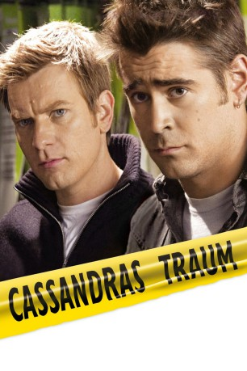

#11670 Cassandras Traum
Alternativ: Cassandra's Dream (Englischer Titel)
 
 IMDB-Wertung: 6.7 / 10
IMDB-Wertung: 6.7 / 10  Tomatometer: 46
Tomatometer: 46  Metascore: 49
Metascore: 49 
Zwei Brüder aus dem Working-Class London: Terry liebt das Pokerspiel, Hundewetten und Whiskey, Ian verfällt dem Charme der wunderschönen Schauspielerin Angela, die einen hohen Lebensstandard fordert. Zunehmende Geldsorgen verleiten die Brüder dazu, sich auf einen gefährlichen Deal einzulassen. Zu spät stellen sie fest, dass es kein Zurück mehr gibt, wenn eine gewisse Grenze erst einmal überschritten ist.
Jahr: 2007
Dauer: 47 Minuten
FSK: 12
Land: USA Studio: The Weinstein CompanyTonspuren:
Untertitel:
Auflösung: SD (640x336) Größe: 699 MB
Genre: Thriller, Drama, Krimi, Liebe
Regisseur:  Woody Allen
Woody Allen
Drehbuch: Woody Allen
Soundtrack: Philip Glass
Darsteller:
 Ewan McGregor als Ian Blaine
Ewan McGregor als Ian Blaine Colin Farrell als Terry Blaine
Colin Farrell als Terry Blaine John Benfield als Brian Blaine
John Benfield als Brian Blaine Clare Higgins als Dorothy Blaine
Clare Higgins als Dorothy Blaine- Ashley Madekwe als Lucy
 Andrew Howard als Jerry
Andrew Howard als Jerry Hayley Atwell als Angela Stark
Hayley Atwell als Angela Stark Sally Hawkins als Kate
Sally Hawkins als Kate Richard Lintern als Director
Richard Lintern als Director- Jennifer Higham als Helen
- Michael Harm als Estate Agent
- Paul Marc Davis als Poker Player
 Tom Wilkinson als Howard Swann
Tom Wilkinson als Howard Swann Phil Davis als Martin Burns
Phil Davis als Martin Burns- Tamzin Outhwaite als Burns' Date
- Cate Fowler als Angela's Mom
 David Horovitch als Angela's Dad
David Horovitch als Angela's Dad Jim Carter als Garage Boss
Jim Carter als Garage Boss Tom Fisher als Nigel
Tom Fisher als Nigel Mark Umbers als Eisley
Mark Umbers als Eisley Richard Graham als Detective
Richard Graham als Detective Julie Eagleton als Partygoer (uncredited)
Julie Eagleton als Partygoer (uncredited) Kenneth Edelson als Tim - Screenwriter (uncredited)
Kenneth Edelson als Tim - Screenwriter (uncredited)- Peter-Hugo Daly als Boat Owner
- Keith Smee als Terry's Track Mate
- Stephen Noonan als Mel
- Dan Carter als Fred
- Lee Whitlock als Mike
- Hugh Rathbone als Poker Player
- Allan Ramsey als Poker Player
- Terry Budin-Jones als Poker Player
- Franck Viano als Poker Player
- Tommy Mack als Poker Player
- Milo Bodrozic als Poker Player
- Emily Gilchrist als Dora
- George Richmond als Bernard
- Phyllis Roberts als Burns' Mother
- Matt Bardock als Jaguar Owner
- Paul Gardner als Bentley Salesman
- Maggie McCarthy als Servant
- Ross Boatman als Detective
- Tom Clear als Photographer on Brighton Pier (uncredited)
- James Fiddy als Background (uncredited)
- Scott Wickes als Local Businessman (uncredited)
Datei: X:\NEU\Cassandras Traum (2007, FSK12, 640x336) - CD1.avi seit 14.08.2019
 Es gibt insgesamt 187 Filme in der Gruppe 'NEU'
Es gibt insgesamt 187 Filme in der Gruppe 'NEU'